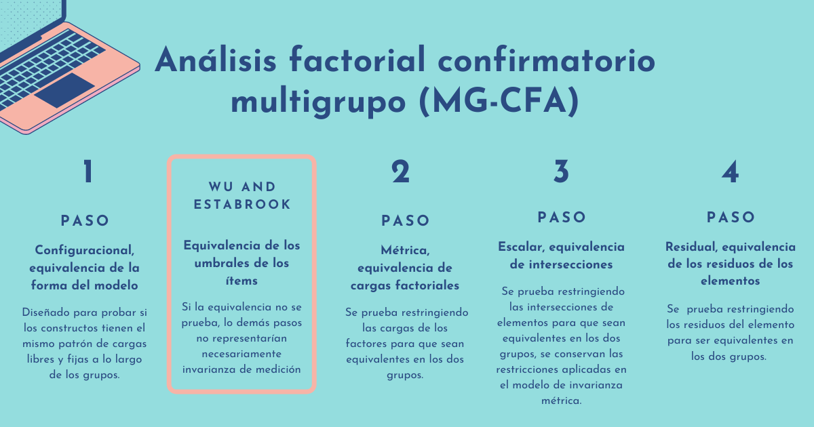

En la psicología, como en muchas otras ciencias, la investigación es uno de los pilares importantes que guían el acercamiento a la realidad y nuevos conocimientos. En cuanto a lo que abordaremos a lo largo de esta reseña, dentro de la investigación en psicología se suele comparar constructos que no son directamente observables (variables latentes) a través de cuestionarios o escalas. Estas comparaciones se pueden dar entre dos o más grupos diferentes o también entre diferentes ocasiones de medición de un mismo grupo. Cualquier comparación que se realice de las medias de grupos presupone que estas funcionan de forma similar en cada grupo evaluado. Por tanto, se busca que el constructo evaluado sea entendido y medido de forma equivalente en todos los grupos, siendo así que las respuestas a los ítems individuales se explicarían por los mismos factores latentes del constructo (Hirschfeld & Brachel, 2014; Svetina, Rutkowski & Rutkowski, 2020). A esta propiedad mencionada se la conoce como invarianza de medición, la cual evalúa la equivalencia -psicométrica- de un constructo entre grupos (como se mencionó anteriormente, estos grupos pueden ser distintos o los mismos en diferentes ocasiones de medición).
Decimos que una escala presenta invarianza de medición entre grupos si las personas con niveles idénticos del constructo tienen la misma puntuación bruta esperada en la medición realizada (Hirschfeld & Brachel, 2014). Cuando esto no sucede, sugiere que el constructo que buscamos evaluar tiene un significado o estructura distinta para los grupos en comparación, por lo que este no puede ser probado o medido de la misma manera (Putnick & Bornstein, 2016). Es importante que antes de comparar grupos y las medidas de estos, se evalúe la invarianza de medición del constructo para tener certeza de una correcta comparación.
Pero podemos preguntarnos, en términos prácticos, ¿cuál es la relevancia de la medición equivalente en los grupos que se desean comparar? Principalmente, las diferencias observadas se pueden atribuir a las diferencias reales entre los constructos estudiados entre los grupos y no a posibles diferencias de comprensión o interpretación del constructo. Es decir, con ello es posible aumentar las inferencias comparativas dentro de la investigación y con esto, la interpretación de estas diferencias.
Las pruebas de invarianza de medición suelen implicar una evaluación de los modelos que definen restricciones de igualdad sobre los parámetros de interés de los grupos que se buscan comparar (Hirschfeld & Brachel, 2014; Svetina, Rutkowski & Rutkowski, 2020). El Análisis Factorial Confirmatorio Multigrupo (MG-CFA) se ha convertido en el estándar de uso para investigar el grado en que las medidas son invariantes entre los grupos (Hirschfeld & Brachel, 2014). Por ello, el artículo tomado para esta reseña busca proveer una guía estructurada y didáctica para el establecimiento de la invarianza de medición apropiada para contextos con varios grupos, con el uso de Mplus, Lavaan y SemTools en R.
Dentro de la recopilación de los principales pasos a seguir tomados de diversos autores (Hirschfeld & Brachel, 2014; Putnick & Bornstein, 2016) se describen los siguientes:
Configuracional, equivalencia de la forma del modelo
Se ajusta el modelo de línea de base en el que se busca comprobar si los constructos tienen el mismo patrón de cargas libres y fijas a lo largo de los diferentes grupos, la magnitud de los parámetros puede variar. Esto representa que la organización básica del constructo evaluado se apoya en los diferentes grupos estudiados; existe una invarianza de configuración si este modelo de línea de base tiene buen ajuste y las mismas cargas son significativas en todos los grupos.
Sin embargo, respecto a este abordaje, primero se debe establecer un modelo de línea base, para posteriormente interponer restricciones de parámetros, esto depende de la forma en la que se identifica el modelo de línea base con respecto a las escalas de respuestas continua latentes. Esto es cuestionado por Wu y Estabrook, plantean que el orden debería tener cierta alteración, entre el primer y segundo paso (configuracional y métrica), para el trabajo de variables ordinales. En este paso se debería comprobar la equivalencia de los umbrales de los ítems, si esta equivalencia no se prueba, los demás pasos no representarían necesariamente invarianza de medición.
Métrica, equivalencia de cargas factoriales
Se ajusta a los datos un modelo de invarianza débil en donde las cargas de los factores están restringidas a ser equivalentes. Luego el modelo con cargas factoriales restringidas se compara con el modelo de invarianza configuracional (línea base). Existe una invarianza débil si el ajuste general del modelo es sustancialmente peor que el ajuste del modelo de varianza configuracional, indicando que al menos una carga no es equivalente entre los grupos y la invarianza métrica no es compatible.
Escalar, equivalencia de intersecciones
Se ajustan los datos a un modelo de invarianza fuerte en el que se restringe las interacciones de elementos para que las cargas de los factores sean equivalentes y se compara con el modelo de invarianza de medición débil. Similar al paso anterior, existe una fuerte invarianza si el ajuste general del modelo de varianza escalar no es significativamente peor que el ajuste del modelo de invarianza débil, indicando que al menos una intersección de elementos es diferente entre los grupos comparados y la invarianza escalar no es compatible.
Residual o invariante, equivalencia de los residuos de los elementos o varianzas únicas
Se prueba restringiendo los residuos del elemento para ser equivalentes en los grupos comparados, luego se compara el modelo general con residuos de elementos restringidos con el modelo de invarianza escalar para determinar el ajuste. Si el ajuste general del modelo es sustancialmente peor que el modelo de invarianza residual indica que al menos un elemento residual es diferente de los grupos y la varianza residual no es compatible.

Hirschfeld, G., & Brachel, R. (2014). Improving Multiple-Group confirmatory factor analysis in R – A tutorial in measurement invariance with continuous and ordinal indicators. Practical Assessment Research and Evaluation, 19(7), 1–12. https://doi.org/10.7275/qazy-2946
Putnick, D., & Bornstein, M. (2016). Measurement Invariance Conventions and Reporting: The State of the Art and Future Directions for Psychological Research. Developmental Review, 41, 71–90. https://doi.org/10.1016/j.dr.2016.06.004
Svetina, D., Rutkowski, L., & Rutkowski, D. (2020). Multiple-group invariance with categorical outcomes using updated guidelines: An illustration using Mplus and the lavaan/semTools packages. Structural Equation Modeling, 27(1), 111–130. https://doi.org/10.1080/10705511.2019.1602776